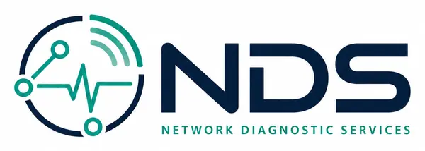

Regras determinísticas
Latência, perda, velocidade e qualidade de Wi-Fi são avaliadas por regras explícitas.

Infraestrutura · Diagnóstico de rede
O NDS é o motor canônico da Buildeas para avaliar conectividade. Recebe sinais de rede, aplica regras confiáveis, recomenda a próxima ação e pode traduzir o diagnóstico para uma explicação humana.

O produto
Produtos diferentes podem medir a rede de maneiras diferentes, mas não precisam inventar sua própria lógica para interpretar cada resultado. O NDS centraliza essa responsabilidade em um motor reutilizável e agnóstico de interface.
Ele combina uma base determinística, responsável por ler fatos e regras, com uma camada opcional de linguagem natural para explicar o resultado sem transformar inteligência artificial em fonte da verdade.
Latência, perda, velocidade e qualidade de Wi-Fi são avaliadas por regras explícitas.
O diagnóstico não termina no problema: aponta uma próxima ação técnica e segura.
Uma camada de IA pode traduzir evidências para linguagem natural sem substituir o motor.
API serverless, contratos validados e execução preparada para baixa latência.
O NDS separa a complexidade técnica da experiência final. Isso permite que diferentes aplicativos usem a mesma interpretação de rede enquanto mantêm interfaces e propostas completamente distintas.
O NDS funciona nos bastidores. Em vez de disputar atenção com os produtos de interface, ele oferece uma capacidade compartilhada de diagnóstico para que experiências como o SignallQ possam evoluir sem duplicar interpretação técnica em cada cliente.
Plataforma Buildeas
O NDS foi construído para que vários produtos possam consumir a mesma inteligência de diagnóstico.